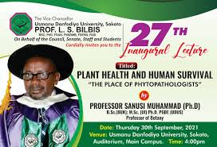

Upcoming Events and Activities
Published on January 3, 2025
UDUS is excited to announce a number of upcoming events and activities for the academic year. These include the annual matriculation ceremony for new students, career fairs for those seeking job opportunities, workshops on various professional and academic topics, and cultural festivals to celebrate the diversity within the student body. Students are encouraged to participate in these events to enhance their academic and social experiences during their time at the university.
Back to News